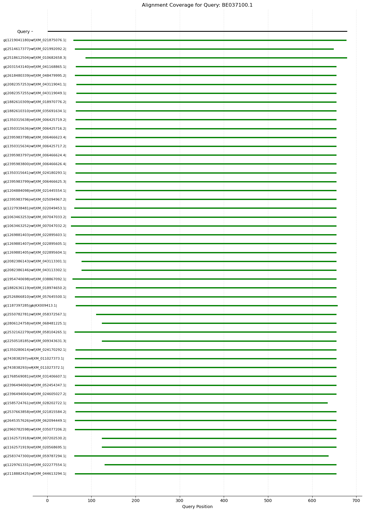

import Bio
print(Bio.__version__)1.84Python offers a variety of functions to work with text data (Strings) that in turn make it easier to work with biological data such as DNA or protein sequences. BioPython library provides a set of classes dedicated to parsing and analysis of different type of biological data. The functions avaiable in BioPython helps researcher to progammatically process the data. Below we’ll see some of the features in Biopython for working with biological data.
To install Biopython library run pip install biopython. For more details regarding Biopython installation and tutorials, please refer to the Biopython wiki.
To check the version of Biopython, run the following command.
import Bio
print(Bio.__version__)1.84To work with sequences, we’ll need the Bio.Seq class which has the required functions for reading and writing sequence data. Once we have imported this class we can create objects having required data. The example below shows constructing a sequence object with a DNA sequence and then using the complement and translate functions to find the sequence of the complementary strand and the translated protein sequence, respectively.
from Bio.Seq import Seq
new_sequence = Seq('AATTGGAACCTT')
print(new_sequence)
print(new_sequence.complement())
print(new_sequence.translate())AATTGGAACCTT
TTAACCTTGGAA
NWNLLooking at the sequence object, one might wonder how is this different from a string object. Because we can easily initialize a string variable with the required sequence as the value. The difference here is that the two are the objects of different classes i.e. the Seq object belongs to the Bio.Seq.Seq class whereas the string object belongs to Str. These differences in turn indicate the differences in the kind of functionality associated with these objects (think object-oriented programming). For example, the complement and translate functions make sense only in the case of sequences and not in the case of any generic text.
The Bio.SeqUtils package offers a set of utility functions for getting some basic information about the sequences. These include, e.g., calculating the GC content or the melting temperature for the DNA sequences.
from Bio.SeqUtils import gc_fraction
from Bio.SeqUtils import MeltingTemp as mt
print(gc_fraction(new_sequence))
print(mt.Tm_Wallace(new_sequence)) # Tm_GC can also be used.0.3333333333333333
32.0Similarly, there are functions to get information about the protein sequences. The ProtParam module has utility functions for performing basic analysis of protein sequences. For example, the molecular_weight function returns the molecular weight of the protein and the count_amino_acids function returns a dictionary having the count for all the amino acids.
from Bio.SeqUtils.ProtParam import ProteinAnalysis
P1 = ProteinAnalysis("MFAEGRNREST")
print(P1.molecular_weight())
print(P1.count_amino_acids()) # get_amino_acid_percent can also be used.1297.3975
{'A': 1, 'C': 0, 'D': 0, 'E': 2, 'F': 1, 'G': 1, 'H': 0, 'I': 0, 'K': 0, 'L': 0, 'M': 1, 'N': 1, 'P': 0, 'Q': 0, 'R': 2, 'S': 1, 'T': 1, 'V': 0, 'W': 0, 'Y': 0}When we are working with the sequence data, we generally do not type sequences instead we read (and write) sequences from a file. We’ll now see how to read and write sequences using BioPython.
To create a sequence object by reading sequence from a file, we can use the SeqIO class. The parse function in this class can read and write sequences in different formats. This function take two arguments - file name and format, and return an iterator having all the sequences. The code below shows reading a file having multiple sequences and printing the sequences using the seq attribute. Note that this would print sequnces without any annotations. The description attribute of SeqIO object can used to print the description of a sequence as given in the input file. In the code below, the output would be restricted to first three sequences. If you need to print the data for all sequences then remove the if block. The sequence file used in the example below is available here
from Bio import SeqIO
count=0
for all_seqs in SeqIO.parse("Human_MAPK.fasta", "fasta"):
print(all_seqs.description)
print(all_seqs.seq)
count += 1
if(count == 3):
breaksp|O15264|MK13_HUMAN Mitogen-activated protein kinase 13 OS=Homo sapiens OX=9606 GN=MAPK13 PE=1 SV=1
MSLIRKKGFYKQDVNKTAWELPKTYVSPTHVGSGAYGSVCSAIDKRSGEKVAIKKLSRPFQSEIFAKRAYRELLLLKHMQHENVIGLLDVFTPASSLRNFYDFYLVMPFMQTDLQKIMGMEFSEEKIQYLVYQMLKGLKYIHSAGVVHRDLKPGNLAVNEDCELKILDFGLARHADAEMTGYVVTRWYRAPEVILSWMHYNQTVDIWSVGCIMAEMLTGKTLFKGKDYLDQLTQILKVTGVPGTEFVQKLNDKAAKSYIQSLPQTPRKDFTQLFPRASPQAADLLEKMLELDVDKRLTAAQALTHPFFEPFRDPEEETEAQQPFDDSLEHEKLTVDEWKQHIYKEIVNFSPIARKDSRRRSGMKL
sp|O60271|JIP4_HUMAN C-Jun-amino-terminal kinase-interacting protein 4 OS=Homo sapiens OX=9606 GN=SPAG9 PE=1 SV=4
MELEDGVVYQEEPGGSGAVMSERVSGLAGSIYREFERLIGRYDEEVVKELMPLVVAVLENLDSVFAQDQEHQVELELLRDDNEQLITQYEREKALRKHAEEKFIEFEDSQEQEKKDLQTRVESLESQTRQLELKAKNYADQISRLEEREAELKKEYNALHQRHTEMIHNYMEHLERTKLHQLSGSDQLESTAHSRIRKERPISLGIFPLPAGDGLLTPDAQKGGETPGSEQWKFQELSQPRSHTSLKVSNSPEPQKAVEQEDELSDVSQGGSKATTPASTANSDVATIPTDTPLKEENEGFVKVTDAPNKSEISKHIEVQVAQETRNVSTGSAENEEKSEVQAIIESTPELDMDKDLSGYKGSSTPTKGIENKAFDRNTESLFEELSSAGSGLIGDVDEGADLLGMGREVENLILENTQLLETKNALNIVKNDLIAKVDELTCEKDVLQGELEAVKQAKLKLEEKNRELEEELRKARAEAEDARQKAKDDDDSDIPTAQRKRFTRVEMARVLMERNQYKERLMELQEAVRWTEMIRASRENPAMQEKKRSSIWQFFSRLFSSSSNTTKKPEPPVNLKYNAPTSHVTPSVKKRSSTLSQLPGDKSKAFDFLSEETEASLASRREQKREQYRQVKAHVQKEDGRVQAFGWSLPQKYKQVTNGQGENKMKNLPVPVYLRPLDEKDTSMKLWCAVGVNLSGGKTRDGGSVVGASVFYKDVAGLDTEGSKQRSASQSSLDKLDQELKEQQKELKNQEELSSLVWICTSTHSATKVLIIDAVQPGNILDSFTVCNSHVLCIASVPGARETDYPAGEDLSESGQVDKASLCGSMTSNSSAETDSLLGGITVVGCSAEGVTGAATSPSTNGASPVMDKPPEMEAENSEVDENVPTAEEATEATEGNAGSAEDTVDISQTGVYTEHVFTDPLGVQIPEDLSPVYQSSNDSDAYKDQISVLPNEQDLVREEAQKMSSLLPTMWLGAQNGCLYVHSSVAQWRKCLHSIKLKDSILSIVHVKGIVLVALADGTLAIFHRGVDGQWDLSNYHLLDLGRPHHSIRCMTVVHDKVWCGYRNKIYVVQPKAMKIEKSFDAHPRKESQVRQLAWVGDGVWVSIRLDSTLRLYHAHTYQHLQDVDIEPYVSKMLGTGKLGFSFVRITALMVSCNRLWVGTGNGVIISIPLTETNKTSGVPGNRPGSVIRVYGDENSDKVTPGTFIPYCSMAHAQLCFHGHRDAVKFFVAVPGQVISPQSSSSGTDLTGDKAGPSAQEPGSQTPLKSMLVISGGEGYIDFRMGDEGGESELLGEDLPLEPSVTKAERSHLIVWQVMYGNE
sp|O60336|MABP1_HUMAN Mitogen-activated protein kinase-binding protein 1 OS=Homo sapiens OX=9606 GN=MAPKBP1 PE=1 SV=4
MAVEGSTITSRIKNLLRSPSIKLRRSKAGNRREDLSSKVTLEKVLGITVSGGRGLACDPRSGLVAYPAGCVVVLFNPRKHKQHHILNSSRKTITALAFSPDGKYLVTGESGHMPAVRVWDVAEHSQVAELQEHKYGVACVAFSPSAKYIVSVGYQHDMIVNVWAWKKNIVVASNKVSSRVTAVSFSEDCSYFVTAGNRHIKFWYLDDSKTSKVNATVPLLGRSGLLGELRNNLFTDVACGRGKKADSTFCITSSGLLCEFSDRRLLDKWVELRNIDSFTTTVAHCISVSQDYIFCGCADGTVRLFNPSNLHFLSTLPRPHALGTDIASVTEASRLFSGVANARYPDTIALTFDPTNQWLSCVYNDHSIYVWDVRDPKKVGKVYSALYHSSCVWSVEVYPEVKDSNQACLPPSSFITCSSDNTIRLWNTESSGVHGSTLHRNILSSDLIKIIYVDGNTQALLDTELPGGDKADASLLDPRVGIRSVCVSPNGQHLASGDRMGTLRVHELQSLSEMLKVEAHDSEILCLEYSKPDTGLKLLASASRDRLIHVLDAGREYSLQQTLDEHSSSITAVKFAASDGQVRMISCGADKSIYFRTAQKSGDGVQFTRTHHVVRKTTLYDMDVEPSWKYTAIGCQDRNIRIFNISSGKQKKLFKGSQGEDGTLIKVQTDPSGIYIATSCSDKNLSIFDFSSGECVATMFGHSEIVTGMKFSNDCKHLISVSGDSCIFVWRLSSEMTISMRQRLAELRQRQRGGKQQGPSSPQRASGPNRHQAPSMLSPGPALSSDSDKEGEDEGTEEELPALPVLAKSTKKALASVPSPALPRSLSHWEMSRAQESVGFLDPAPAANPGPRRRGRWVQPGVELSVRSMLDLRQLETLAPSLQDPSQDSLAIIPSGPRKHGQEALETSLTSQNEKPPRPQASQPCSYPHIIRLLSQEEGVFAQDLEPAPIEDGIVYPEPSDNPTMDTSEFQVQAPARGTLGRVYPGSRSSEKHSPDSACSVDYSSSCLSSPEHPTEDSESTEPLSVDGISSDLEEPAEGDEEEEEEEGGMGPYGLQEGSPQTPDQEQFLKQHFETLASGAAPGAPVQVPERSESRSISSRFLLQVQTRPLREPSPSSSSLALMSRPAQVPQASGEQPRGNGANPPGAPPEVEPSSGNPSPQQAASVLLPRCRLNPDSSWAPKRVATASPFSGLQKAQSVHSLVPQERHEASLQAPSPGALLSREIEAQDGLGSLPPADGRPSRPHSYQNPTTSSMAKISRSISVGENLGLVAEPQAHAPIRVSPLSKLALPSRAHLVLDIPKPLPDRPTLAAFSPVTKGRAPGEAEKPGFPVGLGKAHSTTERWACLGEGTTPKPRTECQAHPGPSSPCAQQLPVSSLFQGPENLQPPPPEKTPNPMECTKPGAALSQDSEPAVSLEQCEQLVAELRGSVRQAVRLYHSVAGCKMPSAEQSRIAQLLRDTFSSVRQELEAVAGAVLSSPGSSPGAVGAEQTQALLEQYSELLLRAVERRMERKLThe write function takes three arguments — 1) a sequence object, 2) filename, and 3) file format. The code below reads a fasta file with multiple sequences and then save the first 10 sequences in a new file.
all_seqs = []
for seq_record in SeqIO.parse("Human_MAPK.fasta", "fasta"):
all_seqs.append(seq_record)
print(len(all_seqs))
SeqIO.write(all_seqs[0:5],"first_5.fasta","fasta")275The AlignIO class has functions to parse alignment files. The read and write functions have a similar syntax to the corresponding functions in the SeqIO class. The alignment object stores sequences in 2D array format such that the rows are number of sequences and columns represent alignment length. To extract a sub-set of an alignment, slicing feature can be used. The code below shows reading an alignment file in fasta format followed by selecting a portion of this alignment and save it in a new file in clustal format. The subset is extracted by giving the range for the rows and columns within square brackets. The numbering for both rows and columns starts from zero. In the example below first ten sequences in the alignment are selected since range of rows is :10 and the colums range is 3:12. The sequence file used in the code below is available here.
from Bio import AlignIO
align1 = AlignIO.read("kinases.txt", "fasta")
# slicing - [row range, col range]
x = align1[:10,3:12]
print(x)
AlignIO.write(x,"msa1.aln","clustal")Alignment with 10 rows and 9 columns
LKVL-GKGA consensus
IKEL-GRGN sp|Q22RR1||agc:agc-sar|Tetrahymena
IKKL-GFGQ sp|Q234E6||agc:agc-sar|Tetrahymena
VKKL-GNGQ sp|Q23KG5||agc:agc-sar|Tetrahymena
IKTL-AFGQ sp|Q23DN8||agc:agc-sar|Tetrahymena
IKKL-GVGQ sp|I7MFS4||agc:agc-sar|Tetrahymena
IKKL-GFGQ sp|I7M3B5||agc:agc-sar|Tetrahymena
IKKL-GFGQ sp|I7MD55||agc:agc-sar|Tetrahymena
IKKL-GEGQ sp|Q869J9|pkg-2|agc:pkg|Paramecium
IRVL-GKGC sp|A8N3F0||agc:agc-unique|Coprinopsis1# %load msa1.aln
CLUSTAL X (1.81) multiple sequence alignment
consensus LKVL-GKGA
sp|Q22RR1||agc:agc-sar|Tetrahy IKEL-GRGN
sp|Q234E6||agc:agc-sar|Tetrahy IKKL-GFGQ
sp|Q23KG5||agc:agc-sar|Tetrahy VKKL-GNGQ
sp|Q23DN8||agc:agc-sar|Tetrahy IKTL-AFGQ
sp|I7MFS4||agc:agc-sar|Tetrahy IKKL-GVGQ
sp|I7M3B5||agc:agc-sar|Tetrahy IKKL-GFGQ
sp|I7MD55||agc:agc-sar|Tetrahy IKKL-GFGQ
sp|Q869J9|pkg-2|agc:pkg|Parame IKKL-GEGQ
sp|A8N3F0||agc:agc-unique|Copr IRVL-GKGC
from Bio import Entrez, SeqIO
Entrez.email = "you@example.com"
handle1 = Entrez.efetch(db="nucleotide", id="NM_001301717", rettype="gb", retmode="text")
record1 = SeqIO.read(handle1, "genbank")print(record1.description)
print(len(record1.seq))
print(record1.seq[:50]) Homo sapiens C-C motif chemokine receptor 7 (CCR7), transcript variant 4, mRNA
2191
CTCTAGATGAGTCAGTGGAGGGCGGGTGGAGCGTTGAACCGTGAAGAGTGTo retrieve multiple sequence, pass a comma-separated ids to the id keyword parameter. This time we’ll need to use the parse function to get the sequences from the efetch output.
all_ids = ["NP_000240.1", "NP_000549.1", "NP_001289656.1"]
handle2 = Entrez.efetch(db="protein", id=",".join(all_ids), rettype="gb", retmode="text")
record2 = list(SeqIO.parse(handle2, "genbank"))print(f"There are {len(record2)} sequences")
for record in record2:
print(record.description)
print(len(record.seq))There are 3 sequences
DNA mismatch repair protein Mlh1 isoform 1 [Homo sapiens]
756
hemoglobin subunit alpha [Homo sapiens]
142
floral homeotic protein GLOBOSA-like [Eucalyptus grandis]
208import requests
uniprot_id = "P12345" # Replace with the protein UniProt ID
url = f"https://www.uniprot.org/uniprot/{uniprot_id}.fasta"
response = requests.get(url)
print(response.text)>sp|P12345|AATM_RABIT Aspartate aminotransferase, mitochondrial OS=Oryctolagus cuniculus OX=9986 GN=GOT2 PE=1 SV=2
MALLHSARVLSGVASAFHPGLAAAASARASSWWAHVEMGPPDPILGVTEAYKRDTNSKKM
NLGVGAYRDDNGKPYVLPSVRKAEAQIAAKGLDKEYLPIGGLAEFCRASAELALGENSEV
VKSGRFVTVQTISGTGALRIGASFLQRFFKFSRDVFLPKPSWGNHTPIFRDAGMQLQSYR
YYDPKTCGFDFTGALEDISKIPEQSVLLLHACAHNPTGVDPRPEQWKEIATVVKKRNLFA
FFDMAYQGFASGDGDKDAWAVRHFIEQGINVCLCQSYAKNMGLYGERVGAFTVICKDADE
AKRVESQLKILIRPMYSNPPIHGARIASTILTSPDLRKQWLQEVKGMADRIIGMRTQLVS
NLKKEGSTHSWQHITDQIGMFCFTGLKPEQVERLTKEFSIYMTKDGRISVAGVTSGNVGY
LAHAIHQVTK
To get multiple sequences from Uniprot use the bulk query format
uniprot_ids = ["P69905", "P68871"]
query = " OR ".join([f"accession:{uid}" for uid in uniprot_ids])
url = f"https://rest.uniprot.org/uniprotkb/stream?format=fasta&query={query}"
response = requests.get(url)
response.raise_for_status() # Raise an error for failed requestsfrom io import StringIO
fasta_io = StringIO(response.text)
records = list(SeqIO.parse(fasta_io, "fasta"))for record in records:
print(record.description)
print(len(record.seq))sp|P68871|HBB_HUMAN Hemoglobin subunit beta OS=Homo sapiens OX=9606 GN=HBB PE=1 SV=2
147
sp|P69905|HBA_HUMAN Hemoglobin subunit alpha OS=Homo sapiens OX=9606 GN=HBA1 PE=1 SV=2
142Biopython offers a functionality to programmatically run BLAST on the NCBI servers using the Bio.Blast class. To run blast online at NCBI servers, Bio.Blast can be used which has different function to run Blast and also to parse the output. The NCBIWWW library has qblast function that takes three arguments &emdash; 1) blast program (blastp, blastn, etc.), 2) database (any of the databases available at NCBI, and 3) sequence. Once the blast serach is over the output can be saved in a file. This output would be in XML format. We can use the read function within the NCBIXML class to parse this output. The code below shows running a blast search using qblast against the non-redundant database available at in NCBI. The output file saved in the previous step has all the hits identified in the Blast search. These hits follow a hierarchical manner such that each result would have multiple alignments and within each alignment would be multiple high scoring pairs (hsps) i.e. Blast object \(\longrightarrow\) Alignment \(\longrightarrow\) hsps. For more details on this you may refer to the Blast documentation available at NCBI.
from Bio.Blast import NCBIWWW
from Bio.Blast import NCBIXML
result_ncbi = NCBIWWW.qblast("blastn", "nt", "8332116")
with open("my_blast.xml", "w") as file_handle:
file_handle.write(result_ncbi.read())result_handle = open("my_blast.xml")
blast_record = NCBIXML.read(result_handle)
count = 0
for alignment in blast_record.alignments:
for hsp in alignment.hsps:
print(hsp)
count += 1
if(count==5):
breakScore 482 (435 bits), expectation 5.6e-117, alignment length 624
Query: 59 ACAGAAAATGGGGAGAGAAATGAAGTACTTGGCCATGAAAACTGA...GTA 678
|| ||||||||| |||| | |||| || |||| |||| | ||||... ||
Sbjct: 278 ACCGAAAATGGGCAGAGGAGTGAATTATATGGCAATGACACCTGA...TTA 901
Score 463 (418 bits), expectation 1.5e-111, alignment length 590
Query: 63 AAAATGGGGAGAGAAATGAAGTACTTGGCCATGAAAACTGATCAA...CCC 649
|||||||| ||| |||| | || ||||| |||||||| || |||...|||
Sbjct: 42 AAAATGGGTAGACGAATGGATTATTTGGCGATGAAAACCGAGCAA...CCC 631
Score 443 (400 bits), expectation 4.0e-106, alignment length 597
Query: 87 TTGGCCATGAAAACTGATCAATTGGCCGTGGCTAATATGATCGAT...TAG 679
||||||||||||||||| ||| |||| |||||||| |||| |||...|||
Sbjct: 25 TTGGCCATGAAAACTGAGCAAATGGCGTTGGCTAATTTGATAGAT...TAG 621
Score 441 (398 bits), expectation 1.4e-105, alignment length 593
Query: 65 AATGGGGAGAGAAATGAAGTACTTGGCCATGAAAACTGATCAATT...CTG 655
||||||||| ||| | | | ||||||||||||||||||| ... ||
Sbjct: 254 AATGGGGAG-GAA--GGATAATTTGGCCATGAAAACTGATCC---...ATG 838
Score 439 (397 bits), expectation 4.9e-105, alignment length 596
Query: 63 AAAATGGGGAGAGAAATGAAGTACTTGGCCATGAAAACTGATCAA...CTG 655
||||||||||| ||| ||| ||||| |||| |||||||| |...|||
Sbjct: 169 AAAATGGGGAGG---ATGGAGTTTTTGGCTATGAGAACTGATCCA...CTG 755The hsps object has several attributes including the BLAST statistics such as evalue, score, positives, etc. These can be used to extract hits based on certain conditions. E.g., the code below shows saving hits from the previous Blast search with evalue greater than 1e-105 to a new file.
with open("new_file.txt", "w") as file_handle:
for alignment in blast_record.alignments:
for hsp in alignment.hsps:
if (hsp.expect < 1e-105):
print(hsp)
file_handle.write(str(hsp)+"\n")
file_handle.write("\n")
print("DONE")Score 482 (435 bits), expectation 5.6e-117, alignment length 624
Query: 59 ACAGAAAATGGGGAGAGAAATGAAGTACTTGGCCATGAAAACTGA...GTA 678
|| ||||||||| |||| | |||| || |||| |||| | ||||... ||
Sbjct: 278 ACCGAAAATGGGCAGAGGAGTGAATTATATGGCAATGACACCTGA...TTA 901
Score 463 (418 bits), expectation 1.5e-111, alignment length 590
Query: 63 AAAATGGGGAGAGAAATGAAGTACTTGGCCATGAAAACTGATCAA...CCC 649
|||||||| ||| |||| | || ||||| |||||||| || |||...|||
Sbjct: 42 AAAATGGGTAGACGAATGGATTATTTGGCGATGAAAACCGAGCAA...CCC 631
Score 443 (400 bits), expectation 4.0e-106, alignment length 597
Query: 87 TTGGCCATGAAAACTGATCAATTGGCCGTGGCTAATATGATCGAT...TAG 679
||||||||||||||||| ||| |||| |||||||| |||| |||...|||
Sbjct: 25 TTGGCCATGAAAACTGAGCAAATGGCGTTGGCTAATTTGATAGAT...TAG 621
DONEThe better approach to work with BLAST results is to create a dataframe having all the attributes for all the hits. The following code iterates through the BLAST output and creates a pandas dataframe having all the results.
import pandas as pd
result_handle = open("my_blast.xml")
blast_record = NCBIXML.read(result_handle)
blast_data = []
for alignment in blast_record.alignments:
for hsp in alignment.hsps:
# append a dictionary of attributes for each hit
blast_data.append({
"query_id": blast_record.query_id,
"hit_id": alignment.hit_id,
"hit_def": alignment.hit_def,
"accession": alignment.accession,
"hit_length": alignment.length,
"e_value": hsp.expect,
"bit_score": hsp.bits,
"score": hsp.score,
"alignment_length": hsp.align_length,
"identity": hsp.identities,
"positives": hsp.positives,
"gaps": hsp.gaps,
"percent_identity": 100 * hsp.identities / hsp.align_length,
"percent_positives": 100 * hsp.positives / hsp.align_length,
"query_start": hsp.query_start,
"query_end": hsp.query_end,
"subject_start": hsp.sbjct_start,
"subject_end": hsp.sbjct_end,
"query_sequence": hsp.query,
"match_sequence": hsp.match,
"subject_sequence": hsp.sbjct,
})
# Create DataFrame
df = pd.DataFrame(blast_data)
print(df.shape)
df.head()(50, 23)| query_id | hit_id | hit_def | accession | hit_length | e_value | bit_score | score | alignment_length | identity | ... | percent_positives | query_start | query_end | subject_start | subject_end | query_frame | strand | query_sequence | match_sequence | subject_sequence | |
|---|---|---|---|---|---|---|---|---|---|---|---|---|---|---|---|---|---|---|---|---|---|
| 0 | BE037100.1 | gi|1219041180|ref|XM_021875076.1| | PREDICTED: Chenopodium quinoa cold-regulated 4... | XM_021875076 | 1173 | 5.569490e-117 | 435.898 | 482.0 | 624 | 473 | ... | 75.801282 | 59 | 678 | 278 | 901 | None | (Plus, Plus) | ACAGAAAATGGGGAGAGAAATGAAGTACTTGGCCATGAAAACTGAT... | || ||||||||| |||| | |||| || |||| |||| | |||| ... | ACCGAAAATGGGCAGAGGAGTGAATTATATGGCAATGACACCTGAG... |
| 1 | BE037100.1 | gi|2514617377|ref|XM_021992092.2| | PREDICTED: Spinacia oleracea cold-regulated 41... | XM_021992092 | 752 | 1.494500e-111 | 418.766 | 463.0 | 590 | 447 | ... | 75.762712 | 63 | 649 | 42 | 631 | None | (Plus, Plus) | AAAATGGGGAGAGAAATGAAGTACTTGGCCATGAAAACTGATCAAT... | |||||||| ||| |||| | || ||||| |||||||| || ||||... | AAAATGGGTAGACGAATGGATTATTTGGCGATGAAAACCGAGCAAT... |
| 2 | BE037100.1 | gi|2518612504|ref|XM_010682658.3| | PREDICTED: Beta vulgaris subsp. vulgaris cold-... | XM_010682658 | 621 | 4.010310e-106 | 400.732 | 443.0 | 597 | 448 | ... | 75.041876 | 87 | 679 | 25 | 621 | None | (Plus, Plus) | TTGGCCATGAAAACTGATCAATTGGCCGTGGCTAATATGATCGATT... | ||||||||||||||||| ||| |||| |||||||| |||| ||||... | TTGGCCATGAAAACTGAGCAAATGGCGTTGGCTAATTTGATAGATT... |
| 3 | BE037100.1 | gi|2031543140|ref|XM_041168865.1| | PREDICTED: Juglans microcarpa x Juglans regia ... | XM_041168865 | 1020 | 1.399730e-105 | 398.929 | 441.0 | 593 | 448 | ... | 75.548061 | 65 | 655 | 254 | 838 | None | (Plus, Plus) | AATGGGGAGAGAAATGAAGTACTTGGCCATGAAAACTGATCAATTG... | ||||||||| ||| | | | ||||||||||||||||||| |... | AATGGGGAG-GAA--GGATAATTTGGCCATGAAAACTGATCC---G... |
| 4 | BE037100.1 | gi|2618480339|ref|XM_048479995.2| | PREDICTED: Ziziphus jujuba cold-regulated 413 ... | XM_048479995 | 1028 | 4.885550e-105 | 397.126 | 439.0 | 596 | 448 | ... | 75.167785 | 63 | 655 | 169 | 755 | None | (Plus, Plus) | AAAATGGGGAGAGAAATGAAGTACTTGGCCATGAAAACTGATCAAT... | ||||||||||| ||| ||| ||||| |||| |||||||| | ... | AAAATGGGGAGG---ATGGAGTTTTTGGCTATGAGAACTGATCCA-... |
5 rows × 23 columns
df.columnsIndex(['query_id', 'hit_id', 'hit_def', 'accession', 'hit_length', 'e_value',
'bit_score', 'score', 'alignment_length', 'identity', 'positives',
'gaps', 'percent_identity', 'percent_positives', 'query_start',
'query_end', 'subject_start', 'subject_end', 'query_frame', 'strand',
'query_sequence', 'match_sequence', 'subject_sequence'],
dtype='object')Now that we have a dataframe, we can easily select hits based on desired thresholds. For instance, the code below selects all the hits with evalue less than 1e-105.
df[df["e_value"] < 1e-105]| query_id | hit_id | hit_def | e_value | bit_score | score | query_start | query_end | subject_start | subject_end | alignment_length | identity | gaps | query_sequence | match_sequence | subject_sequence | |
|---|---|---|---|---|---|---|---|---|---|---|---|---|---|---|---|---|
| 0 | BE037100.1 | gi|1219041180|ref|XM_021875076.1| | PREDICTED: Chenopodium quinoa cold-regulated 4... | 5.569490e-117 | 435.898 | 482.0 | 59 | 678 | 278 | 901 | 624 | 473 | 4 | ACAGAAAATGGGGAGAGAAATGAAGTACTTGGCCATGAAAACTGAT... | || ||||||||| |||| | |||| || |||| |||| | |||| ... | ACCGAAAATGGGCAGAGGAGTGAATTATATGGCAATGACACCTGAG... |
| 1 | BE037100.1 | gi|2514617377|ref|XM_021992092.2| | PREDICTED: Spinacia oleracea cold-regulated 41... | 1.494500e-111 | 418.766 | 463.0 | 63 | 649 | 42 | 631 | 590 | 447 | 3 | AAAATGGGGAGAGAAATGAAGTACTTGGCCATGAAAACTGATCAAT... | |||||||| ||| |||| | || ||||| |||||||| || ||||... | AAAATGGGTAGACGAATGGATTATTTGGCGATGAAAACCGAGCAAT... |
| 2 | BE037100.1 | gi|2518612504|ref|XM_010682658.3| | PREDICTED: Beta vulgaris subsp. vulgaris cold-... | 4.010310e-106 | 400.732 | 443.0 | 87 | 679 | 25 | 621 | 597 | 448 | 4 | TTGGCCATGAAAACTGATCAATTGGCCGTGGCTAATATGATCGATT... | ||||||||||||||||| ||| |||| |||||||| |||| ||||... | TTGGCCATGAAAACTGAGCAAATGGCGTTGGCTAATTTGATAGATT... |
To save the filtered set of hits (or the entire output) to a csv file, we can use the to_csv function.
df_top_hits = df[df["e_value"] < 1e-105]
df_top_hits.to_csv("Blast_hits.csv", index=False)# %load Blast_hits.csv
query_id,hit_id,hit_def,e_value,bit_score,score,query_start,query_end,subject_start,subject_end,alignment_length,identity,gaps,query_sequence,match_sequence,subject_sequence
BE037100.1,gi|1219041180|ref|XM_021875076.1|,"PREDICTED: Chenopodium quinoa cold-regulated 413 plasma membrane protein 2-like (LOC110697660), mRNA",5.56949e-117,435.898,482.0,59,678,278,901,624,473,4,ACAGAAAATGGGGAGAGAAATGAAGTACTTGGCCATGAAAACTGATCAATTGGCCGTGGCTAATATGATCGATTCCGATATCAATGAGCTTAAAATGGCAACAATGAGGCTCATCAATGATGCTAGTATGCTCGGT--CATTACGGG-TTTGGCACTCATTTCCTCAAATGGCTCGCCTGCCTTGCGGCTATTTACTTGTTGATATTGGATCGAACAAACTGGAGAACCAACATGCTCACGTCACTTTTAGTCCCTTACATATTCCTCAGTCTTCCATCCGGGCCATTTCATCTGTTCAGAGGCGAGGTCGGGAAATGGATTGCCATCATTGCAGTCGTGTTAAGGCTGTTCTTCAACCGGCATTTCCCAGTTTGGCTGGAAATGCCTGGATCGTTGATACTCCTCCTGGTGGTGGCACCAGACTTCTTTACACACAAAGTGAAGGAGAGCTGGATCGGAATTGCAATTATGATAGCGATAGGGTGTCACCTGATGCAAGAACATATCAGAGCCACTGGTGGCTTTTGGAATTCCTTCACACAGAGCCACGGAACTTTTAACACAATTGGGCTTATCCTTCTACTGGCTTACCCTGTCT-GTTTATGGTCATCTTCATGATGTA,|| ||||||||| |||| | |||| || |||| |||| | |||| ||| | |||| ||| ||| ||||| | ||||| ||||||||||| || || | |||| ||||| |||||||| || ||||| || | || ||||| |||||||| || | |||||| |||| ||||| ||||||||||||||||| ||||||| ||||| |||||||||||||||||||| ||||| ||||| || |||||||||||||||||||| || || || ||| | || | || || ||||| |||||||||||||| | | || || ||| ||||||| |||||| |||| | ||||||| ||| | || ||||| ||||| ||||||| | ||||||| || ||||| || | |||||||| | ||||| || ||||| ||| ||| |||| || || ||||||||| | || |||||||||||||||| || |||||||| || | ||||| || || || ||||| |||| || | || |||||||| | || || |||||||||| | | || ||||| || |||||||| ||,ACCGAAAATGGGCAGAGGAGTGAATTATATGGCAATGACACCTGAGCAACTAGCCGCGGCCAATTTGATCAACTCCGACATCAATGAGCTCAAGATCGTTGTGATGACACTCATTCATGATGCTTCTAGACTCGGCGGCACCTCAGGATTTGGAACTCATTTTCTTAGATGGCTAGCCTCTCTTGCTGCTATTTACTTGTTGATCCTGGATCGCACAAATTGGAGAACCAACATGCTCACATCACTCTTAGTACCATACATATTCCTCAGTCTTCCTTCTGGCCCTTTTTACCTTCTTAGGGGTGAGGTTGGGAAATGGATTGCTTTTGTCGCGGTTGTGCTAAGGCTATTCTTCCACCGCCGCTTCCCAGAATGGTTAGAGATGCCAGGATCACTGATACTATTGTTGGTGGTAGCTCCAGAATTGCTAGCACACAAATTAAAGGATAGTTGGATGGGAGTTGTAATTCTGTTAATCATAGGGTGTTATTTGCTGCAAGAACATATCAGGGCAACTGGTGGTTTAAGAAATTCGTTTACTCAAAGCCATGGAATTTCCTATACGATTGGGCTGCTTCTCTTATTGGCTTACCCAATTTGGTCCATGGTTATTTTCATGATTTA
BE037100.1,gi|2514617377|ref|XM_021992092.2|,"PREDICTED: Spinacia oleracea cold-regulated 413 plasma membrane protein 2-like (LOC110787470), mRNA",1.4945e-111,418.766,463.0,63,649,42,631,590,447,3,AAAATGGGGAGAGAAATGAAGTACTTGGCCATGAAAACTGATCAATTGGCCGTGGCTAATATGATCGATTCCGATATCAATGAGCTTAAAATGGCAACAATGAGGCTCATCAATGATGCTAGTATGCTCGG---TCATTACGGGTTTGGCACTCATTTCCTCAAATGGCTCGCCTGCCTTGCGGCTATTTACTTGTTGATATTGGATCGAACAAACTGGAGAACCAACATGCTCACGTCACTTTTAGTCCCTTACATATTCCTCAGTCTTCCATCCGGGCCATTTCATCTGTTCAGAGGCGAGGTCGGGAAATGGATTGCCATCATTGCAGTCGTGTTAAGGCTGTTCTTCAACCGGCATTTCCCAGTTTGGCTGGAAATGCCTGGATCGTTGATACTCCTCCTGGTGGTGGCACCAGACTTCTTTACACACAAAGTGAAGGAGAGCTGGATCGGAATTGCAATTATGATAGCGATAGGGTGTCACCTGATGCAAGAACATATCAGAGCCACTGGTGGCTTTTGGAATTCCTTCACACAGAGCCACGGAACTTTTAACACAATTGGGCTTATCCTTCTACTGGCTTACCC,|||||||| ||| |||| | || ||||| |||||||| || ||||| |||| ||| ||| ||||||||||||||||||| ||||| || || || ||| |||| | ||||| ||| || |||||| ||| | || || || |||||||| ||| |||||||||||| || | |||||||||||||| || | ||||||||| | ||||||| ||||||||| || ||||||||||| || ||||| ||||| ||||| ||||| || || ||||| || || ||||| ||||| |||||||||||||| | | | || ||| ||||| | |||||| |||| |||||||| ||| |||||||||| | || |||||||| | ||||||| || ||||| | || || | |||| ||||| ||||| ||| ||| | || || || ||||| ||| |||| | ||||| ||||| || || |||||||| || ||||||| |||||||| || || || | || ||||||||||||||| | || | ||||||||||,AAAATGGGTAGACGAATGGATTATTTGGCGATGAAAACCGAGCAATTAGCCGCGGCCAATTTGATCGATTCCGATATCAACGAGCTGAAGATCGCCGTGATGGCGCTCGTTCATGATACTACTACGCTCGGCGGTCAATCGGGATTCGGAACTCATTTTCTCCAATGGCTCGCCTCATTTTCTGCTATTTACTTGTTAATCCTTGATCGAACACATTGGAGAAGCAACATGCTTACTTCACTTTTAGTACCATACATTTTCCTAAGTCTCCCATCTGGCCCCTTTCACCTTTTAAGAGGTGAGGTTGGGAAATGGATTGCTTTTGTCTCGGTTGTGCTAAGGTTATTCTTCCACCGCAGTTTCCCAGAATGGTTGGAAATGCCAGTATGTTTGATACTATTATTGGTGGTAGCTCCAGAAATGCTTGCAATATCAATGAAAGAGAGTTGGATGGGAGTTGTAGTTGTGTTAATCATAGGATGTTACCTTCTACAAGAGCATATTAGGGCAACTGGTGGTTTAAGGAATTCTTTCACACAAAGACATGGGATTTCCAACACAATTGGGCTTCTTCTCTTGTTGGCTTACCC
BE037100.1,gi|2518612504|ref|XM_010682658.3|,"PREDICTED: Beta vulgaris subsp. vulgaris cold-regulated 413 plasma membrane protein 2 (LOC104895996), mRNA",4.01031e-106,400.732,443.0,87,679,25,621,597,448,4,TTGGCCATGAAAACTGATCAATTGGCCGTGGCTAATATGATCGATTCCGATATCAATGAGCTTAAAATGGCAACAATGAGGCTCATCAATGATGCTAGTATGCTC---GGTCATTACGGGTTTGGCACTCATTTCCTCAAATGGCTCGCCTGCCTTGCGGCTATTTACTTGTTGATATTGGATCGAACAAACTGGAGAACCAACATGCTCACGTCACTTTTAGTCCCTTACATATTCCTCAGTCTTCCATCCGGGCCATTTCATCTGTTCAGAGGCGAGGTCGGGAAATGGATTGCCATCATTGCAGTCGTGTTAAGGCTGTTCTTCAACCGGCATTTCCCAGTTTGGCTGGAAATGCCTGGATCGTTGATACTCCTCCTGGTGGTGGCACCAGACTTCTTTACACACAAAGTGAAGGAGAGCTGGATCGGAATTGCAATTATGATAGCGATAGGGTGTCACCTGATGCAAGAACATATCAGAGCCACTGGTGGCTTTTGGAATTCCTTCACACAGAGCCACGGAACTTTTAACACAATTGGGCTTATCCTTCTACTGGCTTACCCTGTCT-GTTTATGGTCATCTTCATGATGTAG,||||||||||||||||| ||| |||| |||||||| |||| |||| ||||| ||||| ||||| || || | ||| || |||||||| || ||| ||||| || || || |||||||| ||||||||||| || | |||| |||||||| ||| |||| ||||||||||||| |||||||| |||||||| || |||||||||||||||||||||||| |||| ||||| | || ||||| || || || ||||| || || || |||||||| | || ||||| || | ||| | || ||| |||| |||||||||| |||| |||||||||| |||| |||||||| | ||||||| || || | || ||| | | | | ||||||| |||| | || ||| | || || || ||||||||| | || | ||||| ||||| ||||| || ||||| | ||||||||||||| || | ||| || | || ||| |||||||||||| |||||||| |||||||||| | | || || |||| ||||||||||||,TTGGCCATGAAAACTGAGCAAATGGCGTTGGCTAATTTGATAGATTATGATATGAATGAACTTAAGATCGCTTTGACATCGCTAATTCATGATGCTGCTAGACTCAATGGTCACGGAGGATTCGGAACTCATTTTCTCAAATGGCTTGCTTCATTTGCTGCTATTTATTTGCTGATCCTGGATCGAACAAATTGGAGAACAAACATGCTAACATCACTTTTAGTCCCTTACATATTCTTCAGCCTTCCCACAGGCATCTTTCACCTTTTAAGGGGCGAAGTTGGTAAGTGGATTGCTTTTATCGCAGTTGTACTGAGGTTATTTTTCCACCGCCATTTCCCAGATTGGTTGGAAATGCCAGGATGTTTGATACTGTTGTTGGTGGTCGCTCCCAATTTATTTGCTTATACAATGAAGGATGACTGGTTGGGGGTTGTAGTTTTGTTAATCATAGGGTGTTATTTGCTACAAGAGCATATAAGAGCGACGGGTGGTCTCAGGAATTCCTTCACTCAAACCCATGGTATTTCTAATACAATTGGGCTTCTCCTTCTATTGGCTTACCCCATTTGGTCGATATTCATATTCATGATGTAGimport matplotlib.pyplot as plt
# Define bins and corresponding NCBI BLAST-style colors
bins = [0, 50, 70, 80, 90, 100, float('inf')]
colors = ['blue', 'cyan', 'green', 'darkorange', 'magenta', 'red']
# Assign color based on percent identity
df['color'] = pd.cut(df['percent_identity'], bins=bins, labels=colors, right=True)
# Plot per query
for query in df['query_id'].unique():
sub_df = df[df['query_id'] == query]
plt.figure(figsize=(12, 2 + len(sub_df) * 0.3))
query_length = sub_df['query_end'].max()
plt.hlines(y=0, xmin=1, xmax=query_length, colors='black', linewidth=2, label='Query')
for i, row in enumerate(sub_df.itertuples(), start=1):
plt.hlines(y=-i, xmin=row.query_start, xmax=row.query_end, colors=row.color, linewidth=3)
plt.text(-100, -i, f"{row.hit_id}", va='center', fontsize=8)
plt.title(f"Alignment Coverage for Query: {query}")
plt.xlabel("Query Position")
plt.yticks([0] + [-i for i in range(1, len(sub_df)+1)], ['Query'] + ['']*len(sub_df))
plt.grid(True, axis='x', linestyle='--', alpha=0.3)
plt.gca().spines[['top', 'right', 'left']].set_visible(False)
plt.tight_layout()
plt.show()
To run the Blast search using a sequence file instead of gi number, we first need to create a seqeunce object and then pass it on to the qblast function as shown below. To run this code, save the protein sequence below in a new file example1.fasta.
MFHPGMTSQPSTSNQMYYDPLYGAEQIVQCNPMDYHQANILCGMQYFNNSHNRYPLLPQMPPQFTNDHPY DFPNVPTISTLDEASSFNGFLIPSQPSSYNNNNISCVFTPTPCTSSQASSQPPPTPTVNPTPIPPNAGAV LTTAMDSCQQISHVLQCYQQGGEDSDFVRKAIESLVKKLKDKRIELDALITAVTSNGKQPTGCVTIQRSL DGRLQVAGRKGVPHVVYARIWRWPKVSKNELVKLVQCQTSSDHPDNICINPYHYERVVSNRITSADQSLH VENSPMKSEYLGDAGVIDSCSDWPNTPPDNNFNGGFAPDQPQLVTPIISDIPIDLNQIYVPTPPQLLDNW CSIIYYELDTPIGETFKVSARDHGKVIVDGGMDPHGENEGRLCLGALSNVHRTEASEKARIHIGRGVELT AHADGNISITSNCKIFVRSGYLDYTHGSEYSSKAHRFTPNESSFTVFDIRWAYMQMLRRSRSSNEAVRAQ AAAVAGYAPMSVMPAIMPDSGVDRMRRDFCTIAISFVKAWGDVYQRKTIKETPCWIEVTLHRPLQILDQL LKNSSQFGSS
seq_file = open('example1.fasta')
result_handle2 = NCBIWWW.qblast("blastp", "nr", seq_file.read())
seq_file.close()
with open("test_blast.xml", "w") as out_handle:
out_handle.write(result_handle2.read())
blast_output = open("test_blast.xml")
blast_record = NCBIXML.read(blast_output)
print(blast_record.alignments[0])sp|P45897.1| RecName: Full=Dwarfin sma-4; AltName: Full=MAD protein homolog 3 [Caenorhabditis elegans] >gb|AAA97605.1| SMA-4 [Caenorhabditis elegans]
Length = 570
Let’s say we need only the alignment with the mouse sequence, then, to print first 50 characters of each alignment with the mouse sequence along with corresponding statistics, the following code can be used.
for alignment in blast_record.alignments:
if "Mus musculus" in alignment.title:
print(alignment.title)
for hsp in alignment.hsps:
print(hsp.query[0:50])
print(hsp.match[0:50])
print(hsp.sbjct[0:50])
print(hsp.positives, hsp.score, hsp.expect)gb|KAI2586911.1| SMAD family member 4 [Homo sapiens] >gb|KAI4046350.1| SMAD family member 4 [Homo sapiens] >gb|PNI70022.1| SMAD4 isoform 6 [Pan troglodytes] >gb|PNJ43713.1| SMAD4 isoform 9 [Pongo abelii]
TAMDSCQQISHVLQCYQQGGEDSDFVRKAIESLVKKLKDKRIELDALITA
T+ D+C I H L C++QGGE F ++AIESLVKKLK+K+ ELD+LITA
TSNDACLSIVHSLMCHRQGGESETFAKRAIESLVKKLKEKKDELDSLITA
274 795.0 8.00678e-96